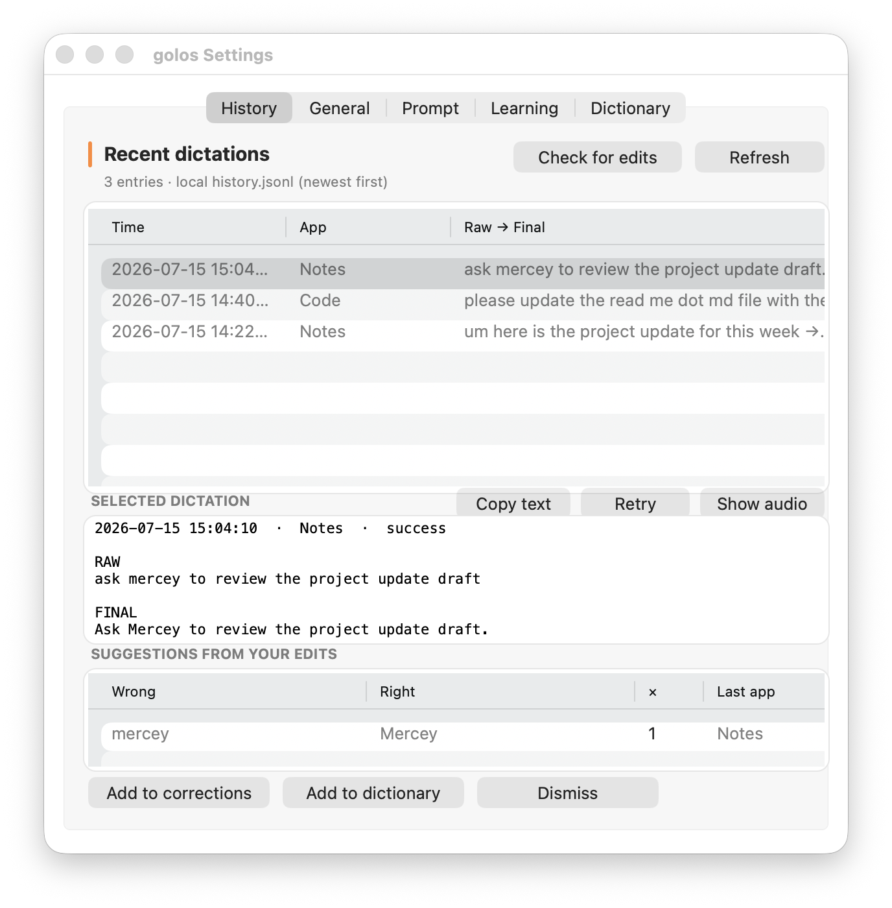
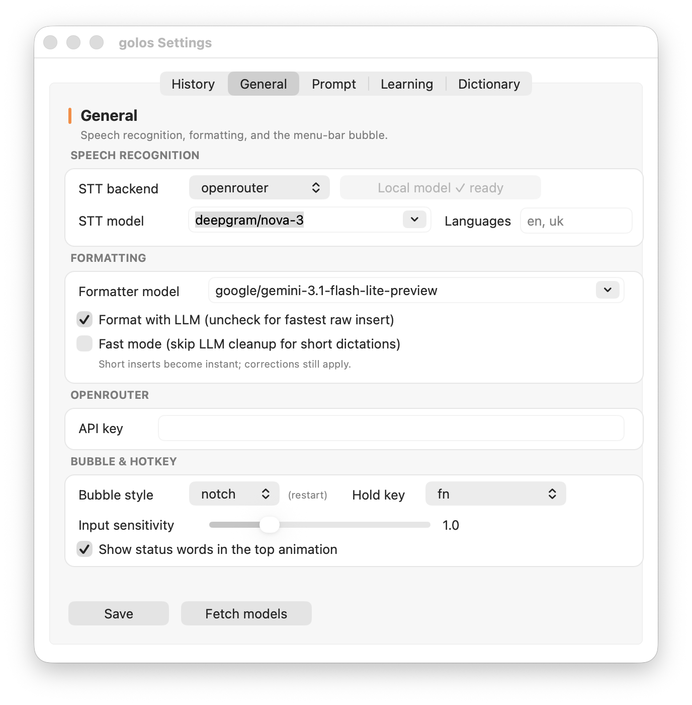
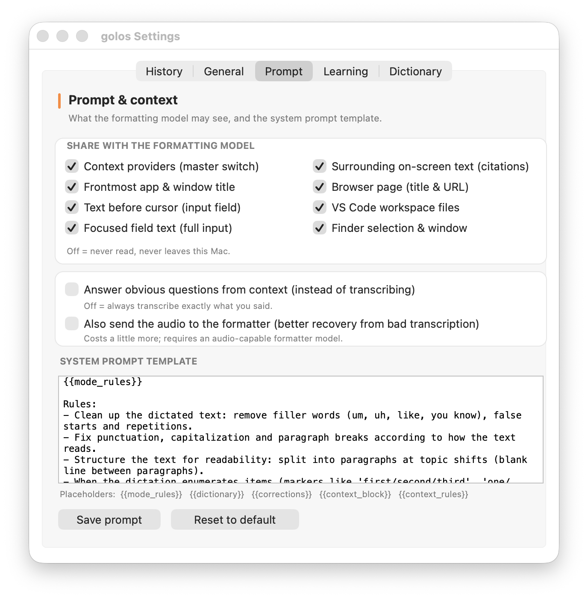
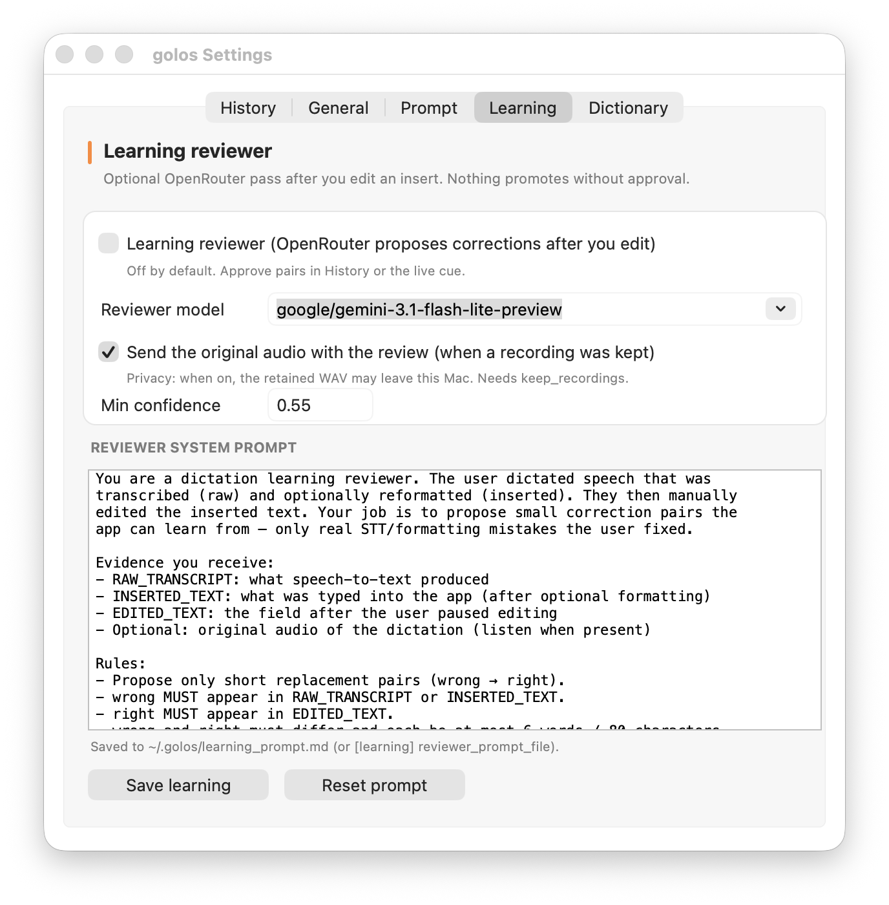
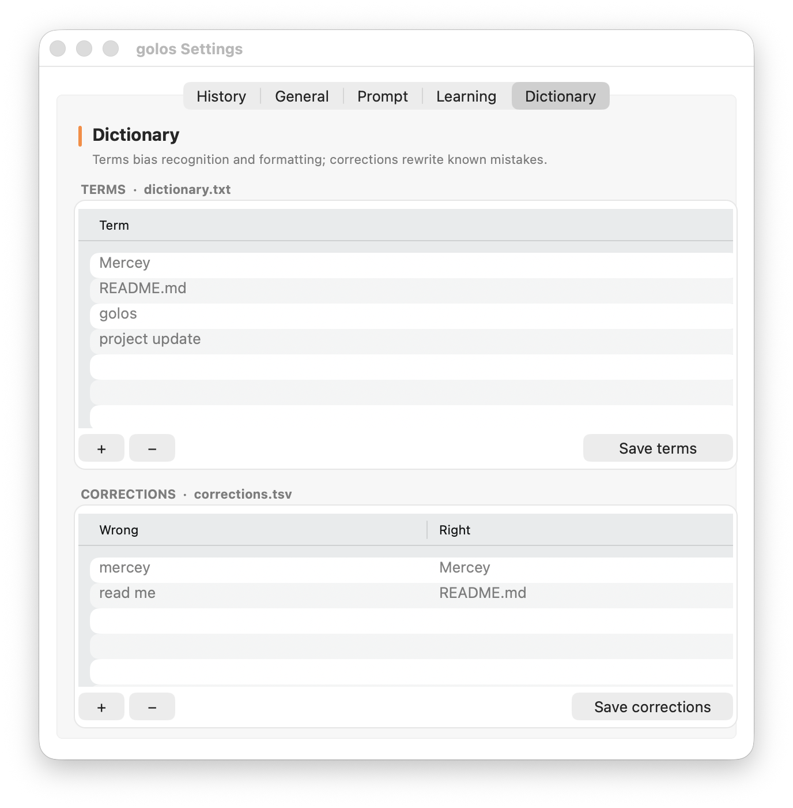

Reference
Settings
The Settings window is golos’s control surface: recent dictations and recovery, speech and formatting options, what context the model may see, optional learning review, and your personal dictionary. Everything below is verified against the current app UI and config surface.
Applies to v0.3.3
Open Settings
- Click the golos chakra glyph in the macOS menu bar.
- Choose Settings….
- The window titled golos Settings opens with five tabs. History is first and selected by default each time you open it.
Accessory app. golos has no Dock icon. Closing Settings returns focus to the previous app; the menu-bar item stays available. From the same menu: Permissions (live ✓/✗), Test insertion, and Export Diagnostics… (redacted local zip — use before restarting when the strip or insert path misbehaves intermittently).
Tab order in the window:
- History — home dashboard
- General — STT, formatter, API key, bubble, hold key
- Prompt — context sharing and system prompt
- Learning — optional post-edit reviewer
- Dictionary — terms and wrong→right corrections
History
History is the default home surface. It reads a local append-only log
(~/.golos/history.jsonl) of every transcription attempt on this Mac.
Nothing in History is uploaded by this screen itself.

Grouped attempts
The table shows one derived row per dictation run
(run_id), not every raw JSONL line. Retries append new attempt lines
linked by the same run_id; originals are never rewritten or deleted.
Grouping is display-only.
- Newest runs appear first.
- When a run was retried, the detail header can show N attempts and the merged latest raw/final/status.
- Legacy lines without a
run_idappear as individual rows (attempts_count = 1). - Columns: Time, App,
Raw → Final (or a single text when they match).
Non-success statuses are prefixed, e.g.
[failed].
Raw, final, and context detail
Select a row to inspect it. The detail pane is read-only and typically includes:
- Header — timestamp, app name, status, stage (if not complete), attempt count when greater than one.
- RAW — speech-to-text transcript (what STT produced).
- FINAL — text that was prepared for insertion (after optional formatting and corrections).
- ERROR — present when the attempt failed at a pipeline stage
(
stt,format, orinsert). - CONTEXT — truncated formatter context captured for that run (app, window, providers, and enabled text roles).
- Meta flags when relevant: fast mode, format fallback, audio retained, multi-attempt count.
What “success” means. A successful history line means golos posted the insertion (typed or pasted into the frontmost field). It does not verify that the target app accepted or displayed the text. macOS or the host app can still drop or mishandle posted input.
Copy, Retry, Show audio
| Control | What it does | What it does not do |
|---|---|---|
| Copy text | Copies the best available text (prefers final, falls back to raw) to the clipboard without changing keyboard focus. | Does not insert into another app; does not modify history. |
| Retry | Re-runs the failed or recoverable pipeline stage on a worker thread for the selected run. On success, a new attempt is appended and History refreshes; status shows that text is ready to copy. | Never auto-inserts into the Settings window or the frontmost app. You must Copy (or dictate again) deliberately. If live dictation owns the pipeline, Retry reports busy and writes no attempt. |
| Show audio | Reveals the retained WAV in Finder when a recording file still exists
on disk (audio_retained is honest — path alone is not enough). |
Does nothing useful if recordings were not kept or the file was deleted (No retained audio). |
| Refresh | Reloads history rows and suggestions from disk. | — |
| Check for edits | Manually triggers edit capture against a recent insertion so suggestion pairs can appear sooner. | Does not promote anything without your approval below. |
Suggestions approval
When you hand-edit an insertion, golos may propose short wrong → right pairs. They aggregate in Suggestions from your edits (columns: Wrong, Right, count, Last app). Sources include the deterministic text-diff path, the optional learning reviewer, and live edit cues after insertion.
Select a suggestion, then choose exactly one action:
- Add to corrections — writes the pair to
corrections.tsvand dismisses the suggestion so the formatter rewrites that mistake next time. - Add to dictionary — adds the right term to
dictionary.txt(biases future STT/formatting) and dismisses the suggestion. - Dismiss — records the pair as dismissed without teaching the dictionary or corrections files.
Human gate. Nothing is learned automatically. Live cue pills and History suggestions both require an explicit accept or promote action. You can also use the menu item Add selection to dictionary for a word you select in any app (requires Accessibility so the selection can be read).
General
Speech recognition, optional LLM formatting, the OpenRouter API key, and the menu-bar bubble / hold key. Click Save to apply; most changes take effect live. Bubble style needs an app restart.

Speech recognition
| Control | Details |
|---|---|
| STT backend |
openrouter (default, cloud) or mlx
(optional on-device Whisper on Apple Silicon). MLX is disabled in the
popup when local support is unavailable (e.g. Intel builds).
|
| Download local (~1.5 GB) | Explicit optional download of MLX model weights. OpenRouter continues to work without it. Dictation never starts this download silently. When the model is already present the button shows Local model ✓ ready and is disabled. |
| STT model |
Editable combo. For OpenRouter, a curated list of verified transcription
models is offered (default deepgram/nova-3). For MLX, the
model id string (default
mlx-community/whisper-large-v3-turbo). You must download
the local model before saving with backend mlx.
|
| Languages |
Comma-separated codes such as en, uk. Empty means
auto-detect. Language handling still depends on the selected STT model;
treat this as a preference, not a universal guarantee.
|
Formatting
- Formatter model — chat model used for cleanup (OpenRouter by default). Fetch models refreshes listings from OpenRouter when a key is available.
- Format with LLM — when unchecked, golos inserts the pure raw transcript (fastest path; no formatting network call and no local corrections). Full LLM cleanup is off.
- Fast mode — skips LLM cleanup for short dictations so short
inserts feel instant; the Fast mode short path can still apply local
corrections. Word threshold is config-only
(
fast_mode_max_words, default 10).
OpenRouter API key
The key field is a secure text field (characters masked while
typing). It is stored in your local config under
~/.golos/ (file mode restricted). Environment variable
OPENROUTER_API_KEY wins over the file when set.
Redact before sharing. Never paste your API key, full
config.toml, personal audio, or history excerpts into bug reports,
screenshots for support, or public issues. Prefer “key is set / not set” and
redact transcripts.
Bubble & hotkey
- Bubble style —
notch(menu-bar strip on notched Macs) orcorner(small pill). Restart required after changing style. - Hold key — push-to-talk key:
fn,right_option,right_command, orf5. Rebinding applies live (no restart). While F5 is the hold key, the event tap swallows F5 so it does not fire other system shortcuts. - Input sensitivity — display gain for the recording waveform only (slider 0.5–2.5). Does not change microphone gain in macOS.
- Show status words in the top animation — when off, the recording/processing/success animations still run, but status labels such as processing or inserted are hidden.
- Restore clipboard after multi-line paste (recommended) — default on. After a multi-line insert, golos restores the prior pasteboard asynchronously with a changeCount/CAS guard so a user copy made after the paste is never overwritten. Uncheck only if a slow target pastes the restored older content instead of the transcript (transcript then stays on the clipboard). Single-line inserts use typing and do not touch the pasteboard. Green success still means events were posted, not verified delivery.
Hands-free lock is hold key+Space (and optionally double-tap when configured). The toggle combo itself is config-only, not a General popup.
Prompt
Controls what the formatting model may read, plus the system prompt template. Turning a context toggle off means golos does not read that source and does not send it — “Off = never read, never leaves this Mac.”

Context toggles
| Toggle | What it shares with the formatter |
|---|---|
| Context providers (master switch) | Master enable for providers and AX text reads. Off disables the whole context package independently of formatting. |
| Frontmost app & window title | Active application identity and window title (tone and filename hints). |
| Text before cursor (input field) | Up to ~500 characters before the caret for continuation placement. |
| Focused field text (full input) | Up to ~4000 characters of the draft you are producing in the focused field — not surrounding chrome. |
| Surrounding on-screen text (citations) | Up to ~4000 characters of normalized visible reading context outside the focused field. Used for comment/citation style output when your dictation refers to what is on screen. Best-effort; empty when inaccessible. |
| Browser page (title & URL) | Supported browsers: current tab title and URL. |
| VS Code workspace files | Workspace folder and a capped file list derived from the window title. |
| Finder selection & window | Front Finder window and selection paths. |
Focused draft vs surrounding text. These are separate roles. Focused field text is what you are writing; visible text is surrounding on-screen reading context only. Context is permission- and provider-dependent — never promised for every app.
Answer mode
Answer obvious questions from context (instead of transcribing) — when on, the formatter may answer a clear question using available context instead of only cleaning your words. When off (default), golos always aims to transcribe exactly what you said (after normal cleanup rules).
Formatter audio
Also send the audio to the formatter attaches the original WAV so the model can recover from a bad transcript. Tradeoffs:
- Privacy — audio leaves this Mac on the format call (in addition to cloud STT if you use OpenRouter STT).
- Cost — multimodal format calls usually cost more than text-only.
- Model — needs an audio-capable chat model (e.g. a Gemini
flash class model that accepts
input_audio).
System prompt template
Editable template stored under ~/.golos/ (default
prompt.md). Placeholders:
{{mode_rules}}— framing for transcribe-only vs answer mode{{dictionary}}— terms from dictionary.txt{{corrections}}— wrong→right pairs{{context_block}}— assembled context payload{{context_rules}}— instructions for using that context
Save prompt writes toggles + template and reloads settings. Reset to default restores the built-in template file.
Learning
The Learning tab configures an optional OpenRouter reviewer that runs after you manually edit a recent insert. It is off by default for privacy. Deterministic text-diff learning still works when the reviewer is off or fails.

Reviewer controls
| Control | Details |
|---|---|
| Learning reviewer | When enabled, after a stable pause in the edited field, an independent OpenRouter model may propose structured wrong→right candidates from raw transcript, inserted text, and your edit. Default: off. |
| Reviewer model | Chat model id, independent of the formatter model (default is an audio-capable Gemini flash-lite class id). |
| Send the original audio | When on and a retained WAV exists, the recording may leave this Mac
with the review request. Needs recording retention
(keep_recordings — config-only). When the file is missing,
review continues text-only. |
| Min confidence | 0–1 floor (default 0.55). Lower-confidence candidates are
discarded before they reach Suggestions. |
| Reviewer system prompt | Saved to ~/.golos/learning_prompt.md (or the path in
reviewer_prompt_file). Save learning /
Reset prompt update settings and the file. |
Human approval only
- The reviewer never auto-promotes pairs into dictionary or corrections.
- Validated candidates become suggestions you approve in History (or via the live cue pill when live cues are enabled).
- Evidence gates still apply: wrong must appear in raw/inserted text; right must appear in the edited field; length bounds apply. With audio, low string-similarity pairs may pass when the audio supports them.
- At most one reviewer attempt is intended per insertion; failures fall back to the offline text-diff path.
Privacy & cost. Enabling the reviewer sends bounded edit evidence (and optionally audio) to OpenRouter. That is separate from STT and formatter traffic. Keep it off for a privacy-minimal setup, together with local MLX STT and formatting disabled if you want fully local dictation on Apple Silicon.
Dictionary
Two local files teach golos your vocabulary. Edit them here with inline tables,
or on disk under ~/.golos/.

Terms (dictionary.txt)
- One term per line.
- Bias recognition and formatting — fed to STT as a prompt / initial prompt so preferred spellings of names and jargon are more likely, and listed for the formatter.
- Use for product names, people, file stems, domain words you want spelled correctly up front.
- + / − add or remove rows; Save terms writes the file.
Corrections (corrections.tsv)
- Each row is Wrong → Right (tab-separated on disk).
- Applied as exact rewrites for known STT/format mistakes
(e.g.
wisper→Wispr). - Different job from terms: terms bias upstream spelling; corrections fix mistakes after they appear.
- Save corrections writes the file.
Live reload
Saving terms or corrections calls the app’s dictionary reload immediately —
you do not need to restart golos for the new lists to take effect. Promoting a
suggestion from History or accepting a live cue also reloads after writing the
relevant file. Comment lines starting with # in either file are
preserved on save from Settings.
Config-only settings (not in the UI)
These keys live in ~/.golos/config.toml (or the project
config.toml defaults before migration). Edit carefully; keep a
backup copy first. There is no launch-at-login setting in
golos — use macOS Login Items yourself if you want that behavior.
| Area | Key | Default / notes |
|---|---|---|
| Recording retention | [audio] keep_recordings |
true — save each dictation WAV under
~/.golos/recordings/. Set false to stop
archiving; History Retry for STT and audio-attached review need retained
files. |
| Audio device | [audio] device |
0 = system default input device index. |
| Input method | [insert] method |
auto | type | paste. Auto types
single-line and pastes multi-line. |
| Clipboard restore | [insert] restore_clipboard |
true by default (async changeCount/CAS restore after
multi-line paste; a user copy after Golos posts is never overwritten).
Set false or uncheck Settings → General to leave the
transcript on the pasteboard for stubborn slow targets. |
| Hotkey combo | [hotkey] toggle_combo |
fn+space or double_fn; hold+Space always works
alongside double-tap mode. |
| Learning master | [learning] enabled |
Suggestion loop on/off (not the same as the reviewer checkbox). |
| Edit window | [learning] edit_window_seconds |
600 — how long after insert edits can be associated. |
| Live cues | [learning] live_cues /
live_cue_seconds |
Clickable wrong→right pill after a stable field pause (default on / ~8 s). Not on the Learning tab. |
| Reviewer timeout | [learning] reviewer_timeout |
Network timeout for the optional reviewer (seconds). |
| Fast mode threshold | [formatting] fast_mode_max_words |
10 — short-dictation cutoff when Fast mode is on. |
| Formatter debug | [formatting] debug |
Logs the complete prompt (sensitive — avoid in shared logs). |
| Prompt paths | prompt_file /
reviewer_prompt_file |
Filenames under ~/.golos/; contents are edited in UI. |
| Alt STT backends | openai_compatible, deepgram sections |
Present in config/schema for advanced setups; General UI focuses on OpenRouter and MLX. |
Privacy & truth notes
- Success = insertion posted, not verified. Green success / a success history status means golos sent keystrokes or a paste — not that the destination app confirmed the text.
- Cloud STT sends audio whenever backend is OpenRouter (or another cloud STT), even if formatting is off.
- Formatter audio and reviewer audio are extra opt-in paths with privacy and cost implications; both need retained recordings when audio is requested.
- Fully local (Apple Silicon only): MLX backend with local weights downloaded, formatting off, learning reviewer off. Context toggles can stay off as well.
- Sanitize support material: no API keys, no personal WAV files, no full history dumps, no unredacted focused-field text from private apps.
- For a full data map, see Privacy & data.